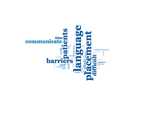

We would like to thank the seventy five (75) students who responded to the Elective survey.
These pages were prepared by:
These pages were prepared using:
People and patients were highlights of the Electives.
View details »
 Many students had no 'low points' but there are some challenges.
Planning seems the key.